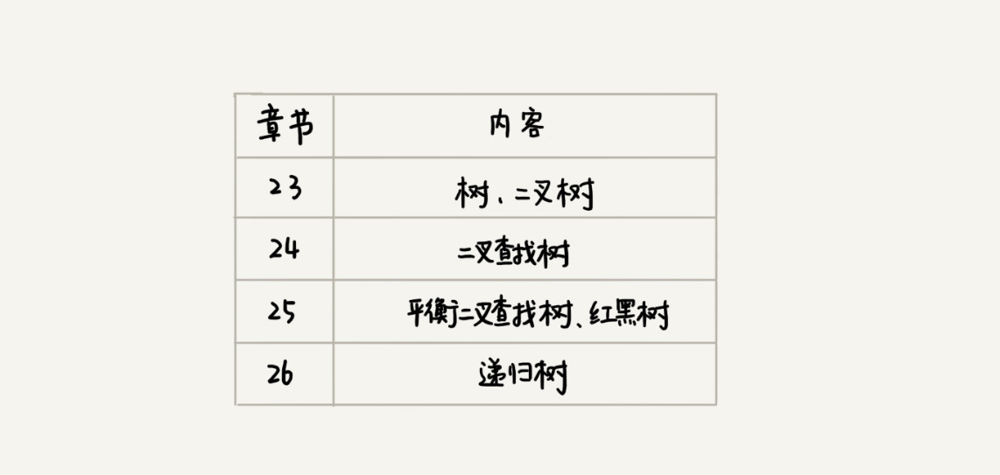

什么样的二叉树适合用数组来存储？

树（Tree）

这里面每个元素我们叫做“节点”；用来连接相邻节点之间的关系，我们叫做“父子关系”。

上图中，A 节点就是 B 节点的父节点，B 节点是 A 节点的子节点。B、C、D 这三个节点的父节点是同一个节点，所以它们之间互称为兄弟节点。我们把没有父节点的节点叫做根节点，也就是图中的节点 E。我们把没有子节点的节点叫做叶子节点或者叶节点，比如图中的 G、H、I、J、K、L 都是叶子节点。
高度、深度、层

图文举例

二叉树（Binary Tree）
二叉树，顾名思义，每个节点最多有两个“叉”，也就是两个子节点，分别是左子节点和右子节点。不过，二叉树并不要求每个节点都有两个子节点，有的节点只有左子节点，有的节点只有右子节点。

编号 2 的二叉树中，叶子节点全都在最底层，除了叶子节点之外，每个节点都有左右两个子节点，这种二叉树就叫做满二叉树。
编号 3 的二叉树中，叶子节点都在最底下两层，最后一层的叶子节点都靠左排列，并且除了最后一层，其他层的节点个数都要达到最大，这种二叉树叫做完全二叉树。

如何表示（或者存储）一棵二叉树？
链式存储法

顺序存储法

如果节点 X 存储在数组中下标为 i 的位置，下标为 2 * i 的位置存储的就是左子节点，下标为 2 * i + 1 的位置存储的就是右子节点。反过来，下标为 i/2 的位置存储就是它的父节点。
但这只是完全二叉树，非完全二叉树会浪费比较多的数组存储空间。
如果某棵二叉树是一棵完全二叉树，那用数组存储无疑是最节省内存的一种方式。
二叉树的遍历
前序遍历、中序遍历和后序遍历
其中，前、中、后序，表示的是节点与它的左右子树节点遍历打印的先后顺序

代码实现三种遍历
1
2
3
4
5
6
7
8
9
10
11
12
13
14
15
16
17
18
19
20
21
22
23
24
25
26
27
28
29
30
31
32
33
34
35
36
37
38
39
40
41
42
43
44
45
46
47
48
49
50
51
52
53
54
55
56
57
58
59
60
| class Node:
def __init__(self, value):
self.value = value
self.left = None
self.right = None
A = Node('A')
B = Node('B')
C = Node('C')
D = Node('D')
E = Node('E')
F = Node('F')
G = Node('G')
A.left = B
A.right = C
B.left = D
B.right = E
C.left = F
C.right = G
class BinaryTree:
def preOrder(self, node):
"""
前序遍历
:param node:
:return:
"""
if node == None:
return
print(node.value, end=" ")
self.preOrder(node.left)
self.preOrder(node.right)
def inOreder(self, node):
"""
中序遍历
:param node:
:return:
"""
if node == None:
return
self.inOreder(node.left)
print(node.value, end=" ")
self.inOreder(node.right)
def postOrder(self, node):
"""
后序遍历
:param node:
:return:
"""
if node == None:
return
self.postOrder(node.left)
self.postOrder(node.right)
print(node.value, end=" ")
|
从我前面画的前、中、后序遍历的顺序图，可以看出来，每个节点最多会被访问两次，所以遍历操作的时间复杂度，跟节点的个数 n 成正比，也就是说二叉树遍历的时间复杂度是 O(n)。
思考
给定一组数据，比如 1，3，5，6，9，10。你来算算，可以构建出多少种不同的二叉树？
既然是数组，那就是完全二叉树，所以有 n! 种，由此引申出 卡特兰数
我们讲了三种二叉树的遍历方式，前、中、后序。实际上，还有另外一种遍历方式，也就是按层遍历，你知道如何实现吗？
使用队列实现。出队的同时，把他的子节点依次入队。
代码实现
1
2
3
4
5
6
7
8
9
10
11
12
|
nodes = [A]
def lineOrder(nodes):
if nodes:
node = nodes.pop(0)
print(node.value, end=' ')
if node.left:
nodes.append(node.left)
if node.right:
nodes.append(node.right)
lineOrder(nodes)
|